序言：
投资海外对于中国人来说已经从一个遥不可及的梦想逐步变为现实。这得益于中国不断行进的对外开放、人民币国际化以及上至管理层下至普通投资者意识到封闭资本市场的负面作用，再加上每年都有大量高资产净值群体的移民及一浪高过一浪的留学潮。
资产的多元化配置从未像现在这样引起投资者的关注。然而，走出国门，面对远大于中国A股市场的容量，投资者感到无所适从。“赚洋钱”团队为此推出“投资美国市场”系列帮助投资者洞察市场机会、把握投资时机、选择优质资产。
“投资美国市场”系列只是众多投资海外市场系列的一部分，“赚洋钱”团队将不断推出按资产类别、行业类别以及市场区域划分的系列专题。
“健康护理与生物科技对许多投资者来说并不陌生，甚至在日常生活中与相关行业的联系颇为紧密。随着人们对自身健康的注重，在健康上的投资也越来越大，更何况一旦当人们发生健康问题时，相应的费用支出会占到家庭支出的相当大一部分。聪明的投资者往往会从自身的体验中寻找投资机会，买入相关行业的股票或基金变成了对于可以预期的巨大支出的风险对冲。然而，与过往不一样，今年恰逢美国大选年，共和与民主两党对于医疗改革持有截然不同的观点。驴象之争总拿医疗改革说事，因此最终哪个党派候选人获胜短期内将对行业产生较大的影响，但长期走势不会改变。本文从行业的过往业绩、药价对行业业绩的影响以及两党对医疗改革的主张对行业盈利的影响等方面进行分析，试图给投资者提供一个更为全面的剖析以帮助到投资者的投资决策。”
内容摘要：
生物科技与健康护理行业在过往的5年表现出众，相应的股票类基金录得所有类别基金的最大涨幅。但是从2015年下半年至2016年年初，其下跌幅度仅次于商品能源。目前行业估值明显低估。
生物科技与健康护理行业的过往优异表现得益于医药价格的逐年大幅上升以及药物专利赋予新药的定价权。价格上升幅度于2015年达到顶峰，之后的药价上涨可能受到抑制，因此对企业盈利产生影响。
美国大选将持续对生物科技与健康护理行业产生影响，尤其是民主党候选人推出的控制药物价格上涨的提议更是对美国医药企业产生盈利负面影响，行业盈利平均影响将达5%左右。其中“双重达标”提议更是影响巨大。
即使不利于医药企业药价上涨的民主党提议得到通过，长期来看，生物科技与健康护理行业的经济防卫宽度并不会受到改变。但是，产品多元化、销售国际化、专注年轻患者以及生物制剂、特殊医疗，如：肿瘤与免疫治疗的企业发展前景并不会受到影响。行业内，企业兼并重组的速度与规模将会进一步加大，这又将有利于行业的长期发展。
投资者应应对受到大选影响的市场情绪波动导致的价格波动，等待估值下降后的合理投资机会。长远看，与健康、疾病相关的行业前景随着人类对自身健康的关注、政府公共卫生开支的增加以及新药研发治疗人类不断出现的疾病的能力的增加而无限广阔，而美国市场在全球市场中最具有代表性。
投资者可以关注以下“赚洋钱”团队精选的股票与基金
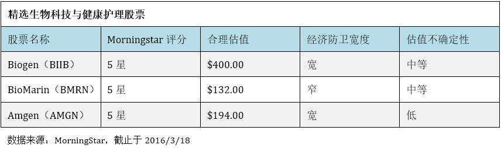“赚洋钱”精选行业股票及基金：
推选理由：
Biogen：公司是多发性硬化症(MS)治疗市场的领先者。公司提供给病人多种治疗选择，包括：注射剂(干扰素β-1a粉针剂与Pregridy)、口服药(富马酸二甲酯)或者高功效治疗(那他珠单抗)。在多发性硬化症领域，竞争日趋激烈，但是Biogen的产品组合具有市场统领地位，并能承受住竞争压力，公司的经济防卫宽度宽而稳定。2016至2018年的医疗销售数据保持乐观，并且公司在神经学方面的多种药物具有潜力。近期股价的走势部分体现了公司两个药物计划的利好：老年痴呆症药物aducanumab以及一种全新的多发性硬化症治疗药物Lingo。同样的，公司的脊髓性肌肉萎缩症计划将在2016年后期或2017年早期获得第三阶段的数据，届时，市场将非常看好其在此罕见小儿科疾病领域的潜在表现。
BioMarin：公司专注于超罕见疾病领域，其产品在全球市场具有很强的定价能力，因此公司专注于治疗严重并且罕见的遗传疾病。其不光有成熟的产品，如：Kuvan、Naglazyme以及Aldurazyme，即将投入市场的新药Vimizim将成为公司的最大产品。非常广泛的产品线使得公司的研发成本高企并阻碍了盈利，但是预期公司能在2017年底从4个市场主要占有率的产品提升至7个，并能在那个时点锁定持久的盈利。但是，风险在于肌肉病症药物Drisapersen在治疗杜氏肌肉营养不良萎缩症上通过审核的时间不能确定。尽管如此，无论通过与否，BioMarin股票的交易价格目前足够低于合理估值。另外三个药物计划 － PKU、贝敦氏症以及软骨发育不全，能够于2017年底前上市，并且在杜氏营养不良萎缩症之外，MioMarin并没有太多的竞争对手。
Amgen：公司具有多个创新的生物治疗方案，并已经转化成一鸣惊人的产品，持续产生高于资本投入的回报。公司多个研发的产品化转变将继续支持其较宽的经济防卫宽度。尽管公司产品较大的倾向于生物仿制剂 － 将近40%的总销售量在未来5年将受到同类生物仿制剂的威胁，公司仍能良好地保持自身地位并取得发展。近期，已经获批的药物，如：治疗绝经后妇女骨质疏松症的药物Prolia/Xgeva、治疗多发性骨髓瘤的Kyprolis以及心血管药物Repatha，将会帮助公司抵御生物仿制剂的威胁。从长期来看，期待公司通过在人类遗传基因数据解密而形成的强劲生产潜力以及内部丰富的生物仿制剂系列将加速公司盈利能力增长。公司在高质生物制品制造领域的信誉以及强大的生物仿制剂产品线将会使公司在全球生物仿制剂市场占到10%的市场份额。
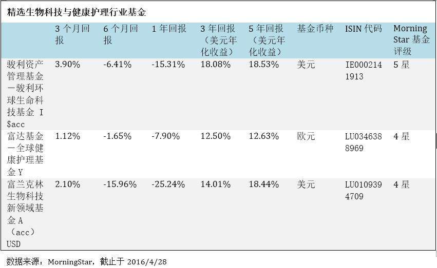推选理由：
首先，从行业的角度看，经过自2015年年中之后的下跌，行业的股价与合理估值比已经下降，并成为所有行业中最低的水平(截止于4月初，数值为0.83)。行业的估值虽然受到美国总统大选民主党对于医疗计划提议的影响，但市场的反应可能过度。即使提议获得通过，对美国医药企业的盈利会产生影响，但长期而言，美国行业的创新能力与市场垄断地位(全球市场占有率)不会下降，新药仍然具有市场定价权，并且行业的兼并整合会不断进行。不管谁最终入主白宫，公共医疗开支不会下降。这些都是有利于行业的长期因素。
其次，从所选基金来看，行业股票的配置达到90%以上，并65%以上配置于美国市场。这对于倾向于投资美国、投资生物科技与健康护理行业的投资者来说，是非常好的产品选择。
第三，从市场估值的角度看，生物科技与健康护理一直以来具有高于其它行业PE(市盈率)的估值(请参考下列表格)。
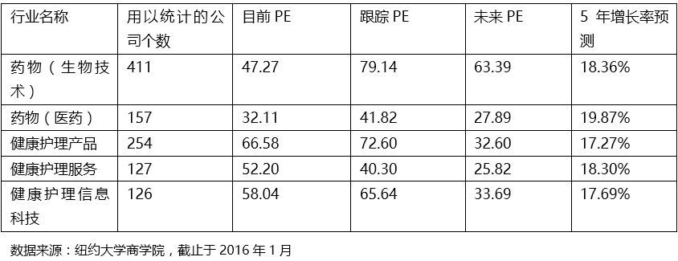而我们精选的基金分别获得MorningStar5星与4星的评级，这表明，这些基金都具有良好的历史表现与稳定的受益波动率，并具有很强的基金经理主动管理能力。除配置美国以外(富兰克林生物科技新领域基金A(acc)USD除外)，基金还配置全球其它地区的行业股票，具有一定的组合分散性。
另外，从组合PE的角度，我们精选的基金的组合PE(市盈率)分别为：17.68、21.24以及17.82，远低于行业目前的PE水平。
行业延伸分析： 基金表现、药价涨幅与医疗支出
在下述表格中，我们列举了相关行业股票基金类别的历史表现以增加投资者直观上的感觉。
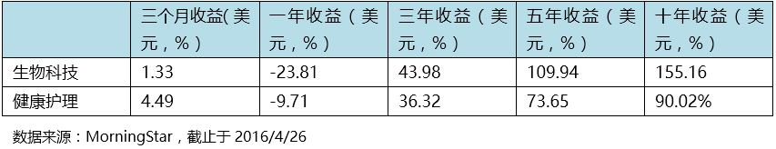下列图表一与图表二佐证了生物科技与健康护理行业基金这几年来为何有这么出众的表现。
图表一：标普500健康护理行业平均权重指数
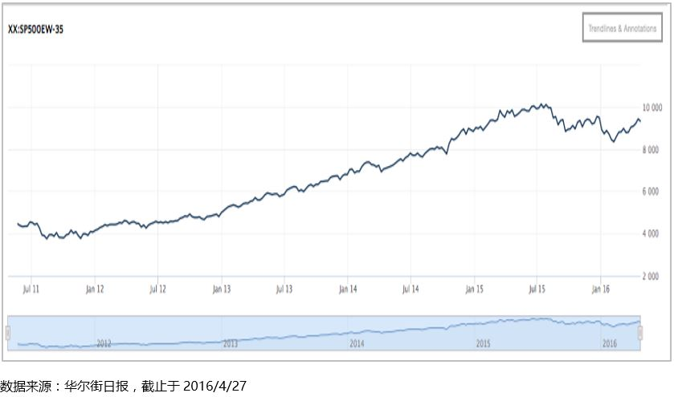图表二：纳斯达克生物科技指数
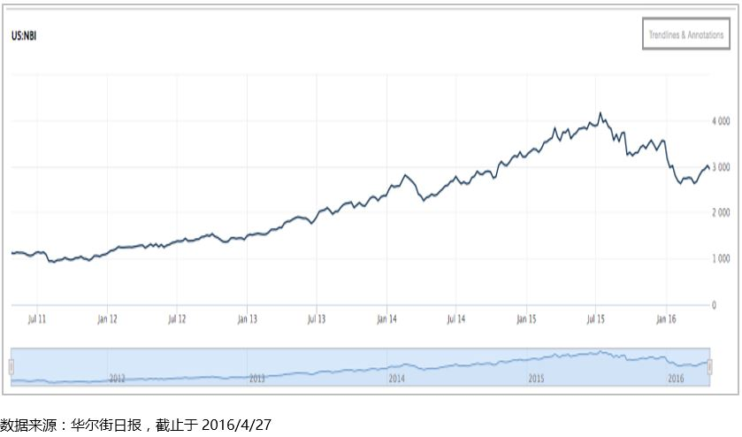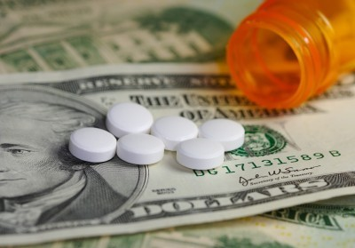
由于药价上涨，不断增加的医疗开支已经成为美国政府与家庭巨大的负担
中国投资者可能对两年前中国政府对国际制药公司发起的一些列调查与制裁仍然记忆犹新，其中包括全球最大的制药公司之一“葛兰素”。这些调查包括这些国际性制药公司通过一系列商务活动进行变相行贿以获取药品销售的定价权。这也表明中国政府抑制药品垄断涨价的决心。由此可以想象，药品价格大幅上涨已经是中国政府极为关注的问题。事实上，药品价格上涨是一个全球性的问题。下图中，例举了世界不同地区与国家的药物支出与2017年的预测，可能实际数字远大于预测数字。
图表三：世界不同地区与国家药物支出预测
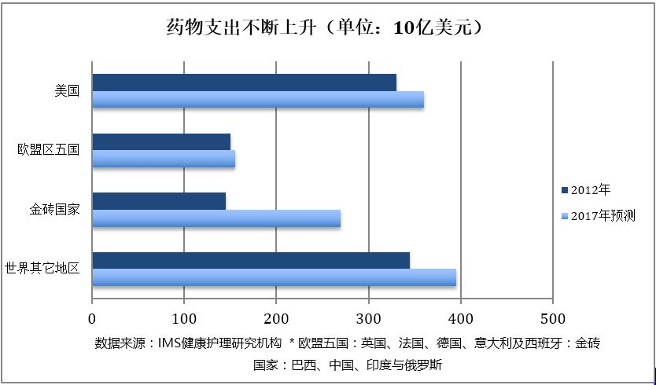在美国这一现象也非常突出，个别药品在短短的两年甚至上涨5500%！这也是近几年生物科技与健康护理行业股票大幅上涨的原因。
图表四：美国品牌医药公司药品平均价格涨幅与通胀对比
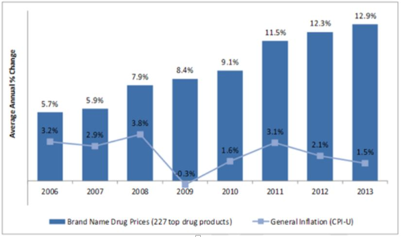从图表四中，不难看出，美国药品上涨自2006年以来已经成为趋势，并与美国通胀率毫不相关！鉴于数据获取的长度有限并不能完全展示，但药品价格在过往的几十年一直处于快速的上涨中，2014年与2015年也并不例外。
下图列出了一些品牌的药品在2015年度内的最大上涨幅度。这些药品包括：心脏药物、皮肤病药物、高血压药物、寄生虫感染药物以及肾脏药物。
图表五：部分药物的上涨幅度
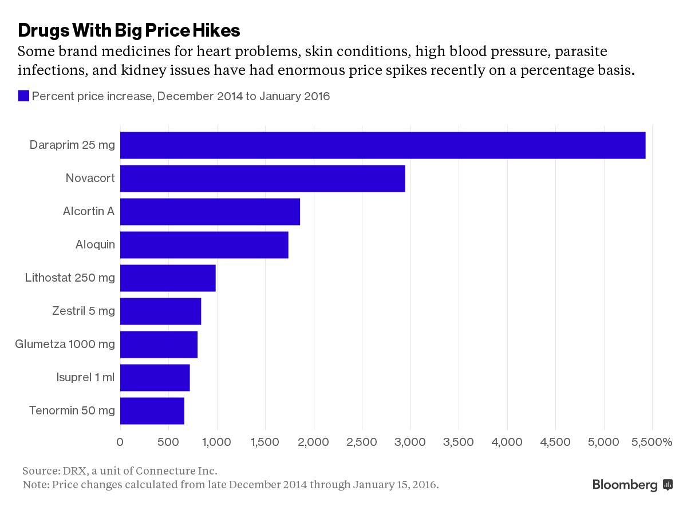数据来源：Bloomberg
美国药物如此巨幅的上涨增加了政府医疗费用的支出，自然会引起政府的关注。在大选之年，共和与民主两党纷纷打出医疗改革牌来获取民心与选票也就不足为怪了。也正是如此，生物科技与健康护理两大行业的股票自去年下半年以来不断下挫。似乎选举的最终结果将影响着这两个行业的前景。
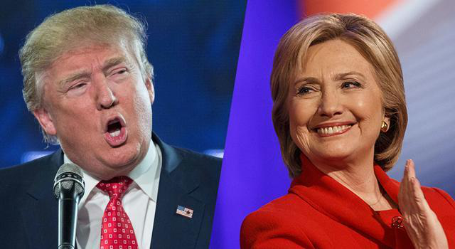美国大选将会影响生物科技与健康护理行业的盈利吗？
我们的回答是：是的，没有任何一个行业会像生物科技与健康护理行业那样命运掌握在美国的选民手里！
背景：共和与民主两党对医疗改革计划的不同主张
共和党主张废除“负担得起的医疗保障计划(Affordable Care Act)”，简称ACA。
ACA法案也称作“奥巴马法案”，是由美国总统奥巴马于2010年批准通过的医疗法案。ACA法案通过执行更为全面的医疗保险改革为美国人提供更好的医疗保障，降低个人与政府在医疗上的支出：
- 扩大医疗保险面
- 保险公司问责制
- 降低医疗保险成本
- 保障更多的医疗选择
- 提升所有美国人的医疗保障质量
图为美国总统奥巴马于2010年签署ACA法案
共和党为何要废除ACA？ － ACA是奥巴马执政时期的民主党医疗政策的产物，自然会引起共和党的反对，说这是“为了反对而反对”毫不为过。 诚然，ACA使得医疗保险惠及普通美国大众，尤其是低收入家庭、老年人、妇女以及儿童，但由于药价的上涨使得法案最初的意图并没有完全实现 － 普通百姓医疗保险的支出逐年增加，政府更是承担了每年大幅增加的医疗保障支出。这也是为何共和党人抨击ACA的一个重要原因。但是，至今为止，共和党人尚未有新的医疗保障计划来取代ACA。
共和党废除ACA有何后果？ － 鉴于共和党并没有更好的法案能够取代ACA，一旦ACA被废除，美国将会有900万民众失去现有的医疗保障，这自然会引起民怨，从而对共和党不利。不过，废除ACA对于医药企业来说可能是件好事，至少不会影响医药企业的盈利。但从我们的角度来看，即使共和党要废除ACA，其仍然有很长的路要走，至少国会不会在没有新的更好的法案取代的情况下通过废除案，因此，共和党的医疗改革主张不在我们对美国相关行业的影响分析之中。
民主党主张控制飞速增长的药价
在前一章的分析中，我们已经看到美国飞速上涨的药价对于政府开支以及普通百姓医疗保险开支的影响。也是这一点，民主党推行多年的ACA法案收到共和党的发难。
民主党为何要控制药价飞速上涨？ － 需要指出的是，ACA法案是由民主党支持并推出的，民主党自然不会推翻自己定下的法案，相反，会继续推行。不同的是，民主党也意识到现行法案的问题，所以其总统选举的新主张自然而然的是对法案的修补，即：通过控制药价、限制美国医药企业的涨价能力来降低政府开支与百姓医疗保险开支。这一点，不光是美国政府可能采取的行为，也是全球其它地区政府正在采取的行为，因此具有其合理性与民意基础。
民主党控制药价上涨有何后果？ － 对于美国选民，政府控制药价不合理的上涨自然是乐意支持的，这不仅能控制政府日益增长的医疗保障开支，还能获取民意支持，民主党何乐不为呢？然而，政府控制医药价格的上涨对于行业显然不利。在上述的分析中，我们已经看到，药品价格的上涨已经成为企业盈利的主要来源之一，况且根据美国的法律，每一种药品都有知识产权保护期，过了保护期，企业定价的标准会发生变化，而且市场出现的竞争也阻止了企业太高药价的能力。因此，在知识产权保护期随心所欲的涨价在未来政府出台控制药价的政策下就很难得以实现了。那么对于多数企业来说，其盈利能力将受到影响。根据MorningStar行业分析师的分析，企业盈利能力会有5%的削减。对于民主党当选后，如何在限制药价与鼓励研发之间取得平衡也是一个需要解决的难题，毕竟新药研发关系到整个人类的健康，而研发与研制需要巨大的投入。
纵观民主党对于医疗改革的提议，我们按对行业影响的顺序归纳为：双重达标提议、政府代表消费者与医药公司直接议价提议、药品进口提议以及其它与控制药价相关的提议。
双重达标提议
双重达标提议是民主党提出的提议中对行业最具威胁性的。因为提议对政府开支成本缩减具有重要意义，并且实施起来相对容易，不光民主党人赞同，基于现状共和党人也不会反对。
在现行医疗保险覆盖的人群中，大约有30%的“美国病人”符合双重达标标准。主要群体为：低收入家庭、老年患者、妇女及儿童。图片节选自电影“美国病人”
双重达标是指在现行医疗保险计划覆盖的处方药受益群体中的部分人同时也享受医疗援助计划的药物受益。这部分人群通常是低收入家庭以及身体状况较差的群体。这部分人群所占比例达到30%，但占到的支出比列却非常高。
在医疗援助计划中，有强制性的退税，因此医药公司每年提高药价的能力非常有限。在医疗保险计划中，医药计划事实上是通过非政府方式运行的，因此药价是可以商议的。研究发现，许多药物在医疗援助计划的强制性退税远大于期在医疗保险计划中的退税。
从上述分析中，不难看出，如果医疗保险计划覆盖的部分人群又同时为医疗援助计划所覆盖，对于医药公司涨价能力的限制以至于盈利能力的限制是非常巨大的。
影响究竟有多大？
如果双重达标协议有30%的可能性在今后4年被通过，那么今后10年整个行业每年将损失120亿美元。
一些企业受到的影响将大于其它企业
首先，投资者需要区别哪些企业的市场集中在美国。其次，这些企业的药物销售在医疗保险计划中的比例。许多企业生物制剂的销售量非常高，这些生物制剂受到管理，你只能去医院配，而这并不在医疗保险计划的覆盖下。或者是，企业的药物针对年轻的患者，这也不在医疗保险计划的覆盖之下。
然后，投资者需要了解医疗保险计划中达到双重达标标准的比例。在一些市场中，达到双重达标标准的比例非常高，如：Gilead Sciences(GILD)以及HIV所处的市场。
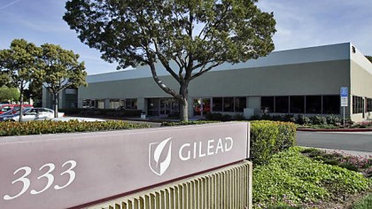图为Gilead Sciences位于加州的总部。Gilead Sciences是一家主要生产抗菌药物的企业，药物用于治疗艾滋病毒、B型肝炎、C型肝炎以及流感等。
下图中列举了大型医药及生物科技公司盈利受到影响的排序：
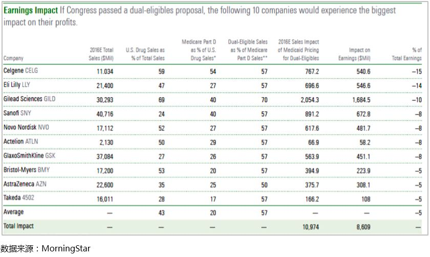政府议价提议
自从医疗保险计划中的“处方药受益法案”获得通过以来，政府被禁止与医药企业议价，但是与企业议价永远是有吸引力的话题，这会帮助到控制医药价格。事实是，当今医疗保险计划占到了药物支出的30%，因此，一旦政府被允许与医药企业议价，这将给医药企业一定的压力。
然而，提议获得通过尚有一些争议：
第一， 这并不是一个两党都会赞同的提议，只不过为民主党所倡议，因此需要相当的时间获得两党的一致通过。
第二， 医药公司面临的价格压力历来就有。作为第三方，“药房受益经理”(Pharmacy Benefit Managers，简称“PMBs”)监督处方药的发售以及承担着药费支付者(通常是保险公司)以及个人消费者与医药公司的议价责任。随着PMBs之间的整合兼并，与医药公司的议价能力越来越大。政府议价与PMBs的作用并无太大差别。
药物进口提议
尽管美国的药物价格要远高于一些国家，但允许消费者把从国外购买的药物带入美国，或通过一些渠道进口到美国，尽管节省了药物费用，但药物安全问题却是一个绕不过去的坎。药物造假显然会成为一种威胁。这也是为何我们看到相关的法律已经几次被通过，却很难具体实施。
美国药物造假事件的发生率极低，得益于严格的药检制度与法律保障。但是，如果允许药物大量进口或私自携带进口，药物造假事件的发生也就在所难免，这将给公共卫生安全带来隐患。
从医药公司这方面，很容易采取一定的措施对药物进口加以限制。比如：在其它国家生产或出口其它国家的药物上标注“提供特定市场”的标识，或者当医药公司得知提供其它市场的药物被进口至美国，它们会减少甚至终止对那一市场的供应，或者涨价。
其它与控制药物价格相关的提议
美国政府并不只是单纯地希望控制药价，甚至有政治家反对在医疗援助计划中对每一个人实行强制性的退税。政府希望的是鼓励医药企业的研发以生产出更多有效的药物治疗各种疾病。但是，政府也意识到，药品价格的飞快上涨，甚至一些已经在市场存在5年或10年的药物价格也在上涨。未来，政府会采取一些措施鼓励发明而非依赖存药的涨价，以确保政府的开支增长用于支持企业发明需要的药物。
大选压力之下的行业经济防卫宽度(Economic Moat)与投资风险
在我们的“2016年1季度全球基金投资季报”中，我们已经对生物科技与健康护理行业的估值与前景做出了分析。
医药公司的经济防卫宽度主要取决于它们持有的无形资产 － 它们创新的能力以及生产出具有定价权与有限竞争力的新药。因此，多元化的产品能够帮助它们获取盈利。
从长期看，假设像“双重达标”这样的提议获得通过，行业的经济防卫宽度也不见得会改变，即使对于受影响最大的企业。然而，前提是适用于那些产品多元化、销售全球化、产品覆盖年轻患者的制药企业。它们储存有足够的产品与更广阔的市场来应对我们看得见的价格影响，并有足够的能力研发新的药物来获取进一步的定价权。同时，专注于肿瘤医疗与健康免疫的生物科技与医药公司发展机会巨大。
尽管如此，笼罩在大选阴影下的生物科技与健康护理行业难免会受到市场投资情绪波动的影响。在大选尘埃落定之前，行业股票的波动在所难免。行业股票价格与合理估值之比可能会出现持续的低估，前几年股票价格连续走高的态势可能较难再现，但从更远的时间区间来看，单纯依赖药物涨价获取盈利的模式将被更多创新所取代，兼并重组的规模与速度会不断增加，并且不管两党谁获胜，政府公共医疗的开支不会缩减。这些都将长期有利于行业的发展。
注：上述分析中部分数据来源于MorningStar。本分析仅供投资者参考，并不构成投资建议。